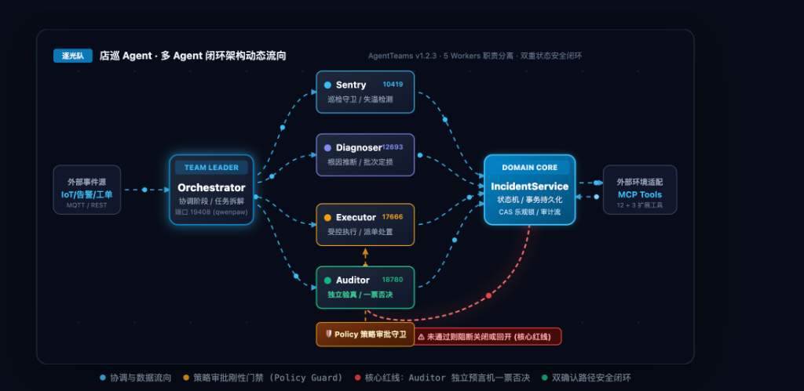
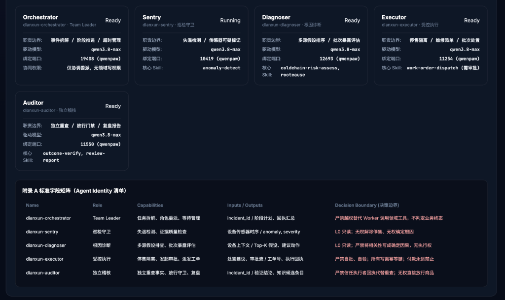

T_amb(t) = T̄ + ΔT · sin(2π(t-14)/24)，模拟室外烈日与空调负荷交变Q̇_door ~ Poisson(λ(t))，早通勤 (8:00)、午高峰 (12:00)、晚客流 (19:00)
safe_for_sale SMALLINT CHECK (0,1)PARTITION BY RANGE (created_at) 月度分区只增金融级账本walle1991/veripatrolveripatrol-retail-telemetry-432ksh.mazhi.icu/zhuguang/phx-fleet.html
P0001 (raise_exception)retryable: False，严禁无休止盲目重试